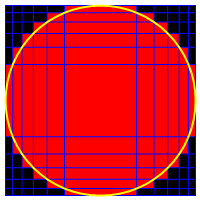
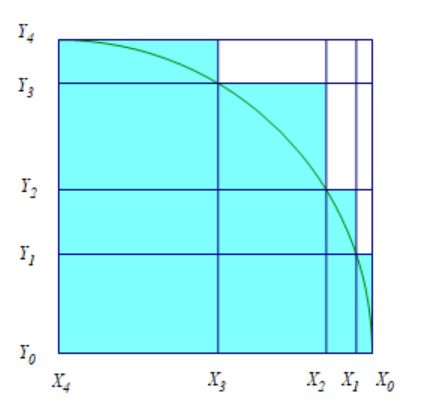

Project Euler 392
Project Euler 392
题目
Enmeshed unit circle
A rectilinear grid is an orthogonal grid where the spacing between the gridlines does not have to be equidistant.
An example of such grid is logarithmic graph paper.
Consider rectilinear grids in the Cartesian coordinate system with the following properties:
The gridlines are parallel to the axes of the Cartesian coordinate system.
There are \(N+2\) vertical and \(N+2\) horizontal gridlines. Hence there are \((N+1) \times (N+1)\) rectangular cells.
The equations of the two outer vertical gridlines are \(x = -1\) and \(x = 1\).
The equations of the two outer horizontal gridlines are \(y = -1\) and \(y = 1\).
The grid cells are colored red if they overlap with the unit circle, black otherwise.
For this problem we would like you to find the positions of the remaining \(N\) inner horizontal and \(N\) inner vertical gridlines so that the area occupied by the red cells is minimized.
E.g. here is a picture of the solution for \(N = 10\):

The area occupied by the red cells for \(N = 10\) rounded to \(10\) digits behind the decimal point is \(3.3469640797\).
Find the positions for \(N = 400\).
解决方案
题目中的网格线全部平行于坐标轴，并固定外边界为垂直外边界：\(x=-1, x=1\)；水平外边界：\(y=-1, y=1，单位圆盘为\)D={(x,y)x2+y2}.$一个格子（矩形单元）被染成红色当且仅当它与圆盘 \(D\) 有交集。
因为圆关于两条坐标轴完全对称，最优解也必然可以取为对称解，因此总红面积满足\(A = 4A_1,\)其中 \(A_1\) 表示第一象限（\(x\ge 0,y\ge 0\)）部分红色格子的面积。
第一象限里坐标里的每个格子形如\([x_L,x_R]\times [y_B,y_T].\)注意圆盘 \(D\) 在第一象限是“向右上单调远离原点”的：在这个矩形里距离原点最近的点必然是左下角 \((x_L,y_B)\)。
- 若 \((x_L,y_B)\notin D\)，那么矩形里所有点距离原点都更远，整个格子不可能与 \(D\) 相交。
- 若 \((x_L,y_B)\in D\)，则该点本身已在圆盘内，格子必与 \(D\) 相交。
因此在第一象限：格子是红格子当且仅当左下角在圆盘内：\(x_L^2+y_B^2\le 1.\)
可见，第一象限内圆的边界曲线为\(y=f(x)=\sqrt{1-x^2}, x\in[0,1],\)且 \(f(x)\) 单调递减。
把第一象限的竖网格线（正半轴部分）按从右到左排列更方便：\(1 = X_0 > X_1 > \cdots > X_n > X_{n+1}=0.\)
这里的 \(n\) 与题目 \(N\) 的关系是，题目给 \(N+2\) 条竖线（含两条外边界）。若 \(N\) 为偶数，可取关于 \(y\) 轴对称且 不必强制包含 \(x=0\) 作为网格线，于是正半轴上有 \(N/2\) 条内线，再加外边界 \(x=1\)。最终第一象限边界“从 \(x=1\) 到 \(x=0\)”会分成\(n+1 = \dfrac{N}{2}+1\)段，也就是\(n = \dfrac{N}{2}.\)
考虑第 \(i\) 条竖条带：\([X_i,X_{i-1}],(i=1,2,\dots,n+1)\)
在这个条带里，一个格子红不红只取决于它左下角是否在圆内，也就是说：只要 \(y\) 方向的下边界 \(y_B\le f(X_i)\)，就会红。
因此在固定了水平网格后，这个条带里红色会从 \(y=0\) 一直叠到某个水平网格线高度 \(Y_i\)，并且 为了最小化面积，我们希望这个高度尽可能小——它会恰好等于“刚好盖住圆弧”的高度。
也就是说，最优时每条竖条带对应一个高度 \(Y_i\)，使得阶梯边界贴在圆上，即\((X_i,Y_i)\)在圆上当且仅当\(X_i^2+Y_i^2=1.\)于是第一象限红面积就是这些矩形面积之和：\(\displaystyle{A_1=\sum_{i=1}^{n+1}(X_{i-1}-X_i)Y_i,X_i^2+Y_i^2=1}.\)

由于最优点 \((X_i,Y_i)\) 在单位圆上，可用角度参数化：\(X_i=\cos a_i, Y_i=\sin a_i,\)并且沿圆弧从 \((1,0)\) 走到 \((0,1)\)，角度递增：\(0=a_0<a_1<\cdots<a_n<a_{n+1}=\dfrac{\pi}{2}.\)
代回面积公式：\(\displaystyle{A_1=\sum_{i=1}^{n+1}(\cos a_{i-1}-\cos a_i)\sin a_i.}\)总红面积为\(\displaystyle{A=4A_1=4\sum_{i=1}^{n+1}(\cos a_{i-1}-\cos a_i)\sin a_i.}\)这就是要最小化的目标函数。
定义\(\displaystyle{S(a_1,\dots,a_n)=\sum_{i=1}^{n+1}(\cos a_{i-1}-\cos a_i)\sin a_i.}\)对内部变量 \(a_i\ (1\le i\le n)\) 求导。只有两项包含 \(a_i\)，即第 \(i\) 项：\((\cos a_{i-1}-\cos a_i)\sin a_i\)和第 \(i+1\) 项：\((\cos a_i-\cos a_{i+1})\sin a_{i+1}\)
记 \(C_i=\cos a_i,\ S_i=\sin a_i\)。
第 \(i\) 项可写作：\((C_{i-1}-C_i)S_i = C_{i-1}S_i - C_iS_i.\)对 \(a_i\) 求导：\(\dfrac{d}{da_i}(C_{i-1}S_i)=C_{i-1}C_i,\dfrac{d}{da_i}(C_iS_i)=(-S_i)S_i + C_iC_i = -S_i^2 + C_i^2.\)
所以\(\dfrac{d}{da_i}((C_{i-1}-C_i)S_i)= C_{i-1}C_i -(-S_i^2 + C_i^2)= C_{i-1}C_i + S_i^2 - C_i^2.\)
第 \(i+1\) 项对 \(a_i\) 求导只有 \(C_i\) 贡献：\(\dfrac{d}{da_i}((C_i-C_{i+1})S_{i+1})= (-S_i)S_{i+1}= -S_iS_{i+1}.\)
令第\(i\)项第\(i+1\)项偏导为零：\(C_{i-1}C_i + S_i^2 - C_i^2 - S_iS_{i+1}=0.\)整理：\(S_iS_{i+1}=C_{i-1}C_i-(C_i^2-S_i^2).\)注意 \(C_i^2-S_i^2=\cos(2a_i)\)，于是
\[S_{i+1}=\dfrac{C_{i-1}C_i-\cos(2a_i)}{S_i}.\tag{1}\]
令\(x_i=\sin a_i (0\le i\le n+1),\)则\(\cos a_i = \sqrt{1-x_i^2}.\)
并且\(\cos(2a_i)=1-2\sin^2 a_i = 1-2x_i^2.\)代入方程\((1)\)得到一个只关于 \(x\) 的递推：
\[ x_{i+1} =\frac{\sqrt{(1-x_{i-1}^2)(1-x_i^2)}-1+2x_i^2}{x_i}, 1\le i\le n. \]
边界条件来自 \(a_0=0,\ a_{n+1}=\dfrac{\pi}{2}\)：\(x_0=\sin 0=0, x_{n+1}=\sin\dfrac{\pi}{2}=1.\)所以问题变成：找 \(x_1\in(0,1)\)，用递推生成 \(x_2,\dots,x_{n+1}\)，使得最终 \(x_{n+1}=1\)。
递推是初值决定全局的：给定 \(x_0=0\) 和 \(x_1\)，就能唯一算出整个序列直到 \(x_{n+1}\)。并且（在合法范围内）\(x_{n+1}\) 会随 \(x_1\) 单调变化，因此可以对函数\(F(x_1)=x_{n+1}(x_1)-1\)做二分，使 \(F(x_1)=0\)。求得 \(x_1\) 后就能重建全部 \(x_i\)，进而算面积。
最终求得\(x_1\)后，由\(\displaystyle{A_1=\sum_{i=1}^{n+1}(\cos a_{i-1}-\cos a_i)\sin a_i}\)以及\(\sin a_i=x_i, \cos a_i=\sqrt{1-x_i^2}=c_i,\)得到\(\displaystyle{A_1=\sum_{i=1}^{n+1}(c_{i-1}-c_i)x_i,c_i=\sqrt{1-x_i^2}.}\)最终答案\(A=4A_1.\)
代码
1 | from decimal import Decimal |